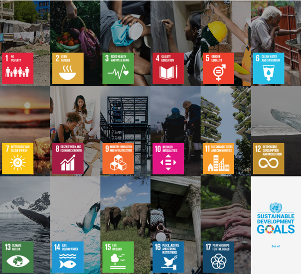
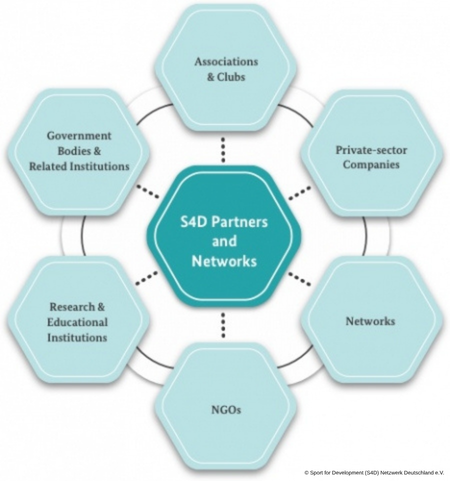

About Sports for Development
What is Sport for Development?
Sport for Development (S4D) refers to the intentional use of sport, physical activity and play to attain specific development objectives, including most notably, the Sustainable Development Goals. Sports in this context is considered as all forms of physical activity that contribute to physical and mental well-being and social interaction, such as play, recreation, organized or competitive sports and indigenous sports and games.
The approach is based on the conviction that sport initiatives can act as powerful and cost-effective means for achieving development goals, such as individual development, health promotion, gender equality, social integration and peace building.

While sport has been used informally for social purposes for much of the twentieth century, Sport for Development emerged as a distinct and formally recognised field in the late 1990s and early 2000s. A pivotal moment came in 2001 when the United Nations established the Office on Sport for Development and Peace (UNOSDP), signalling that sport was being taken seriously as a legitimate tool within the international development architecture. This was reinforced in 2003 when the UN General Assembly declared 6 April the International Day of Sport for Development and Peace. The adoption of the Sustainable Development Goals in 2015, gave the field a clearer framework to work within, as it acknowledged the role of sport for social progress in the Declaration of the 2030 Agenda for Sustainable Development:
Sport is also an important enabler of sustainable development. We recognize the growing contribution of sport to the realization of development and peace in its promotion of tolerance and respect and the contributions it makes to the empowerment of women and of young people, individuals and communities as well as to health, education and social inclusion objectives. — United Nations, Transforming our world: the 2030 Agenda for Sustainable Development, 2015
Alongside the UN's institutional recognition, a growing number of NGOs, sports federations, and private foundations began professionalising their development work during this period. What had once been largely informal or philanthropic activity, sports clubs doing good in their communities, gradually became a recognised sector with its own body of research, dedicated funding streams, and professional networks.

For an overview of the actors of the S4D field, the Interactive Map of sportanddev shows engaged organisations, foundations and institutions around the globe.
In terms of financial support, S4D projects typically draw from a mix of sources. Government bodies and international institutions, such as the UN, the European Union, or national development agencies like USAID or the UK's Foreign, Commonwealth & Development Office, often provide grants. Another common source are private foundations and corporate social responsibility programmes. NGOs and civil society organisations frequently serve as implementing partners, receiving funding from the above sources and delivering programmes on the ground. Smaller, community-based projects may also rely on crowdfunding, local government support, or in-kind contributions such as equipment and facilities donated by sports federations or clubs.
Focus Areas
Sport is used across a range of areas to create meaningful impact. Hover over or click on the cards to explore each one.
Sport is practiced daily by millions of people across the globe. For most, this is a rewarding experience that builds skills, confidence and social connections. However, for some participants the experience can be harmful. For a long time, many clubs, organisations and governments paid little attention to protecting children within sport, often dismissing concerns as someone else's responsibility or treating incidents as isolated cases.
Child protection in sport involves both prevention and response. On the preventive side, this means putting effective policies, practices and procedures in place to reduce the risk of harm. On the reactive side, it means having clear mechanisms to report, investigate and address incidents when they do occur. A strong child protection culture ensures that everyone involved in sport can participate safely, enjoyably and with opportunities to learn.
Democracy can be understood as a system of governance in which the population, or its eligible members, participates in decision-making, typically through elected representatives. Within the Sport for Development field, the relationship between sport and democracy can be explored from several angles. For example, how democratic values are practised within sport itself, and how sport can serve as a vehicle to promote democratic principles in society more broadly.
Sport can function as an environment where citizens have an equal opportunity to voice their opinions, and where values such as teamwork, fairness and collective decision-making are practised. Team sports in particular can help develop future citizens who are grounded in democratic values. Beyond that, sport has the potential to act as a force for unity and can be a space where individuals advocate for democratic principles and good governance.
SDG 10 aims to reduce inequalities and promote the social, economic and political inclusion of all people, regardless of disability, age, ethnicity or other status. Persons with disabilities face a disproportionately high risk of socio-economic disadvantage, including limited access to education, the labour market, transport and sporting activities. Sport can help dismantle some of these barriers by creating inclusive environments and improving both physical and mental well-being.
Participation in sport offers people with disabilities the chance to build personal and social skills that may have been limited due to social isolation. It can also reduce stigma by shifting societal attitudes, promote greater independence through physical development, and contribute to empowerment by building confidence and leadership skills that carry over into advocacy and civic life. Inclusive Sport for Development programmes therefore play an important role in connecting participants to broader community services and challenging the barriers that prevent full social participation.
Sport serves as an agent of unity, with the potential to foster cohesion between displaced populations and the communities that host them. Within refugee contexts, sport-based activities can create meaningful encounters between refugees and local residents, provide a platform for addressing health-related issues, and support the personal development of participants through the transfer of life and vocational skills.
Children and youth in displacement situations are among the most vulnerable groups. Sport, when implemented in a safe and structured environment, can offer relief from the daily hardships of refugee life and support physical, emotional, mental and social development. In the long term, well-designed sport programmes can help build trust, encourage regular participation and open pathways to professional support services, like psychological counselling or vocational training, for those who need them.
SDG 4 calls for inclusive, equitable and quality education and the promotion of lifelong learning for all. Quality physical education and well-delivered sport-based activities can make meaningful contributions to this goal. Sport has the potential to improve learner engagement, create more varied and active learning experiences, foster positive relationships between teachers and students, and make educational environments more inclusive for all.
When applied thoughtfully, sport functions as a vehicle for holistic education. Through participatory and experience-based methods, it helps children and young people develop life competencies such as communication, empathy and goal-setting, while also strengthening concentration and cognitive performance. The attractiveness of sport can be particularly valuable in reaching young people who have disengaged from formal education, offering a route back into learning. Sport and physical education are recognised as a fundamental right in the International Charter of Physical Education and Sport, and as a form of play and recreation in the Convention on the Rights of the Child.
SDG 8 calls for sustained economic growth, decent work and the reduction of youth unemployment. Sport contributes to this goal in multiple ways. Through a supportive training environment, young people can develop key competencies that directly improve their prospects in the labour market. It includes self-awareness, a sense of responsibility, cooperative working and goal-oriented thinking.
Beyond individual skill development, sport can serve as a practical tool to reach marginalised young people and support their (re-)integration into education and employment pathways. At a broader economic level, the sport sector itself represents a growing labour market with roles spanning science, economics, politics and civil society. Its cross-sectoral nature creates synergies with industries such as tourism, education and health, generating wider economic benefits including employment growth.
Climate change is no longer a challenge confined to individual countries. It affects every continent, and its impacts on biodiversity, natural resources and human health are already being felt. Sport for Development programmes recognise the role that sport can play in raising environmental awareness and encouraging responsible behaviour towards nature.
Sport-based approaches can be used to educate children and young people about climate change, water pollution and waste management, while encouraging active engagement with natural environments. Programmes can also take direct, practical steps, like sourcing sports equipment from natural or recycled materials, to model sustainable practice. Involving young people in the production of such equipment not only keeps costs low but also instils a sense of responsibility for caring for shared resources and the natural world.
SDG 5 focuses on ending all forms of discrimination against women and girls and advancing their empowerment worldwide. Sport has a particular role to play in this area, given that it has historically been seen as a predominantly male domain and that women remain underrepresented across almost all aspects of sport. Participation in sport by women and girls directly challenges stereotypes about their physical abilities and their roles in society. Mixed-gender programmes offer further opportunities to advocate for equality and address restrictive gender norms in a practical, lived setting.
Sport can also function as a tool for promoting women's education and leadership. Women in visible sporting roles act as role models, encouraging wider participation and influencing social attitudes toward expanding women's roles in public life. At the same time, sport programmes that include men and boys create openings to address gender-related issues including violence against women and stereotypical attitudes. Working effectively in this area requires a thorough understanding of the specific barriers women and girls face in accessing and benefiting from sport, and a commitment to creating safe, equitable and inclusive environments.
SDG 3 seeks to ensure healthy lives and promote well-being for people of all ages. Regular physical activity contributes directly to this goal by improving physical fitness, preventing non-communicable diseases and supporting mental health, self-esteem and social connectedness. When embedded within development programmes, sport can also serve as a platform for addressing sensitive health topics in ways that are engaging, age-appropriate and less stigmatising than more formal approaches.
Sport events and activities naturally draw people together, making them effective platforms for health education and awareness campaigns. In therapeutic contexts, physical activity can support the treatment of depression, stress and anxiety, and help reduce the social stigma often associated with health conditions. Realising these benefits, however, depends on the quality of programme delivery. Coaches and facilitators need to be equipped with the pedagogical skills to address health topics responsibly and to serve as positive role models for the children and young people they work with.
Policy broadly refers to a set of actions designed to address specific issues or achieve defined outcomes. In practice, it is often concerned with the allocation of resources, determining who benefits and how provision is funded. In the Sport for Development sector, policy decisions are made at multiple levels, from international bodies and national governments through to sports federations and local organisations. These decisions shape who has access to sport and what resources are available to support it.
The Sustainable Development Goals provide a central framework for S4D policy globally. The Kazan Action Plan, adopted in 2017, is the most significant international policy document linking sport directly to the SDGs, identifying ten goals and 36 targets where sport can make the greatest contribution. Policymaking in this field involves recognising where sport can add value, securing sustained political commitment, and ensuring that the voices of those most affected by development policies are meaningfully included in decision-making processes.
Sport provides a neutral platform for interaction and can play a role in reducing violence by bringing together individuals and groups who might otherwise be in conflict. Through sport, participants can learn to cope with winning and losing, manage frustration, develop self-control and practise respectful communication. These experiences help build the social and emotional competencies needed to resolve conflicts without resorting to violence.
Sport-based approaches to violence prevention can reach a wide range of groups, including young people at risk, victims of violence and those being reintegrated into communities after involvement in conflict. Programmes that connect sport with positive mentors, community support structures and broader social services tend to be the most effective. Importantly, these approaches work best when they are carefully designed based on a thorough understanding of the local context, facilitated by trained community leaders and monitored regularly. Because sport, if poorly implemented, can itself become a site of harm rather than prevention.
Physical activity is fundamental to the holistic development of young people, supporting their physical, social and psychological well-being simultaneously. The benefits of sport extend well beyond fitness. In appropriate settings, sport can also contribute to improved academic performance, stronger peer relationships, greater community engagement and the development of values such as empathy, fairness and resilience.
Sport has also been applied as a tool to address youth delinquency and promote community safety. Research indicates that sport alone does not directly reduce risk behaviours, but that structured programmes combining physical activity with life-skills training, leadership development and connections to social and educational services can effectively support young people at risk. Coaches, physical education teachers and community leaders play a crucial role in determining whether sport has a genuinely positive impact. The values they promote and the environments they create are key factors in whether youth development through sport leads to lasting change.